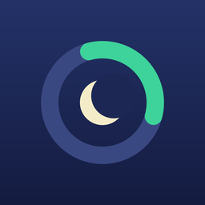

CreuxCreux
Tes heures creuses sur ton iPhone : est-ce le moment de lancer les machines, quel départ différé régler, et tes horaires vont-ils changer avec la réforme ?
- 0h
- 1h
- 2h
- 3h
- 4h
- 5h
- 6h
- 7h
- 8h
- 9h
- 10h
- 11h
- 12h
- 13h
- 14h
- 15h
- 16h
- 17h
- 18h
- 19h
- 20h
- 21h
- 22h
- 23h
Heures creuses, ici de 22 h à 6 h, la plage la plus couranteHeures pleines
- 01Mes heures creuses vont-elles changer ?Vérification gratuite avec la réforme, à partir de tes horaires.
- 02Heures creuses, rentable ou pas ?Option base contre heures creuses, avec ta propre consommation.
- 03Prix du kWh en 2026Le tarif réglementé de 3 à 36 kVA, mis à jour chaque semaine.
Mes heures creuses vont-elles changer ?
La réforme fait évoluer les heures creuses de 11 millions de foyers entre novembre 2025 et octobre 2027 (9,3 millions entre décembre 2026 et octobre 2027). Si certaines de tes heures creuses tombent entre 7 h et 11 h ou entre 17 h et 21 h, elles devraient changer. Ton fournisseur te prévient au moins un mois avant. Creux fait la vérification à partir de tes horaires.
Où trouver mes horaires ?
Sur ta facture d'électricité (« Heures creuses : … »), dans l'espace client de ton fournisseur, ou sur le courrier qui annonce le changement.
Quel départ différé régler sur mon lave-linge ?
Indique la durée du programme et le type de minuterie (départ différé, fin différée ou touches 3/6/9 h) : Creux calcule le délai pour que le cycle tourne entièrement en heures creuses.
Mes données ?
Tes horaires restent sur ton iPhone. Pas de compte, pas de serveur, pas de pub.
Une question, un horaire mal compris ? Réponse sous deux jours ouvrés.
inceept@gmail.com